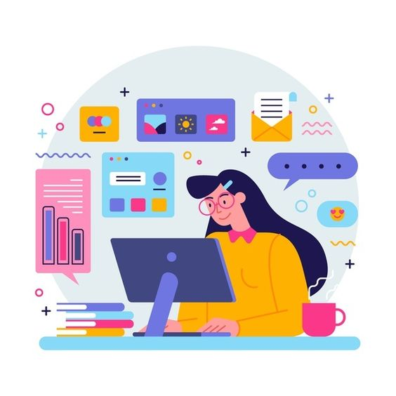
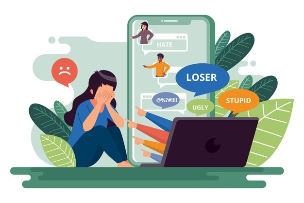
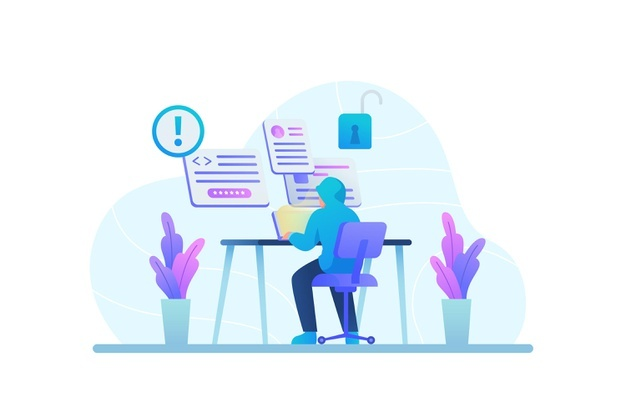

Советы по безопасности: как защититься в интернете
Советы по защите себя от кибербуллинга
Для защиты от интернет-мошенничества соблюдайте несколько правил
Советы по безопасности: как защититься в интернете
Программное решение, обеспечивающее круглосуточную интернет-безопасность
Лучшее программное обеспечение для интернет-безопасности защищает от целого ряда угроз, включая взломы, вирусы и вредоносные программы. Комплексный продукт для обеспечения безопасности в интернете должен обнаруживать уязвимости устройств, блокировать киберугрозы до момента их распространения, а также изолировать и устранять непосредственные опасности.
Блокировка доступа к веб-камере для конфиденциальности в интернете
В результате взлома злоумышленники получают доступ к камере вашего мобильного телефона или компьютера и записывают ваши действия. Это называется “camfecting”. Количество зарегистрированных атак этого типа относительно невелико, хотя в большинстве случаев жертвы не осознают, что их камеры были взломаны, и такие случаи остаются неучтенными.
Самый простой способ заблокировать доступ к веб-камере – использовать клейкую ленту. Однако это невозможно, если регулярно приходится использовать видеоконференции для работы и для общения. Гораздо эффективнее использовать антивирус, обеспечивающий защиту веб-камеры, например, Kaspersky Internet Security. Также рекомендуется выключать компьютер или ноутбук, когда он не используется.
Блокировщики, защищающие от вредоносной рекламы
Блокировщики рекламы убирают рекламу с веб-страниц. При блокировке рекламы исчезает риск просмотра и перехода на вредоносную рекламу. У блокировщиков рекламы есть и другие преимущества. Например, они снижают количество файлов cookie, хранящихся на компьютере, повышают конфиденциальность в интернете благодаря сокращению отслеживания, экономят трафик, обеспечивают более быструю загрузку страниц и увеличивают продолжительность работы батареи мобильных устройств.
Некоторые блокировщики рекламы являются бесплатными, а некоторые – платными. Однако не все блокировщики рекламы блокируют онлайн-рекламу полностью, а некоторые сайты могут работать некорректно при включенном блокировщике рекламы. Можно настроить блокировщики рекламы так, чтобы допускался показ онлайн-рекламы с определенных сайтов.
Родительский контроль для безопасности детей
Родительский контроль – это набор настроек, позволяющих контролировать контент, доступный вашему ребенку в интернете. Родительский контроль, используемый совместно с настройками конфиденциальности, повышает безопасность детей в интернете. Настройка родительского контроля зависит от платформы и устройства. На сайте организации Internet Matters приведены пошаговые инструкции по настройке для каждой платформы. Можно также использовать приложение для родительского контроля, например, Kaspersky Safe Kids.
Очистка компьютера
Очистка компьютера – это инструмент для удаления ненужных и временных файлов и программ из системы. В Kaspersky Total Security предусмотрена функция очистки компьютера, позволяющая находить и удалять редко используемые или установленные без вашего согласия приложения и браузерные расширения.
Кроссплатформенная защита
Интернет-защита должна распространяться на все устройства, используемые для выхода в Интернет: ноутбуки, компьютеры, смартфоны и планшеты. Лучшие программы интернет-безопасности можно установить на несколько устройств, что обеспечит кроссплатформенную защиту от угроз интернет-безопасности.
Советы по защите себя от кибербуллинга
1.Травля по интернету — это угрозы и оскорбления от агрессивно настроенных пользователей в адрес другого пользователя. Заниматься кибербуллингом в ваш адрес может один или несколько человек. Чтобы не пострадать от подобной травли, соблюдайте несколько правил:
2.Не отвечайте на агрессивные сообщения — обидчики только и ждут вашей ответной реакции.
3.Занесите пользователей в чёрный список.
4.Сообщите о происходящем технической поддержке социальной сети. Вам помогут заблокировать пользователя или же написать на него жалобу.
5.Делайте скриншоты переписки, содержащей оскорбления и угрозы, чтобы в случае необходимости использовать её как доказательство травли против вас. На скриншотах должен быть виден текст сообщения и имя отправителя. Не полагайтесь на хранение переписки — в некоторых соцсетях и мессенджерах можно удалить отправленные сообщения.
6.Сообщите о происходящем взрослым. Если угрозы направлены на жизнь и здоровье, то имеет смысл обратиться в правоохранительные органы.
Для защиты от интернет-мошенничества соблюдайте несколько правил:
1.Регистрируясь в социальной сети, закрывайте свой аккаунт от посторонних, а посты с личной информацией публикуйте в режиме «для друзей».
2.Ограничьте контакты в сети с незнакомыми людьми. Никогда не сообщайте им личных данных. Если незнакомый человек хочет встретиться лично, сообщите об этом родителям. Ни в коем случае не ходите на такие встречи в одиночестве.
3.Не публикуйте в открытом доступе личные данные: адрес, номера документов, банковских карт, билетов и так далее.
4.Не переходите по подозрительным ссылкам, даже если получили их по почте или в сообщении от знакомого пользователя.
5.Не скачивайте файлы на подозрительных или ненадёжных сайтах.
Что нужно запомнить

🙂 Внимательно отнеситесь к созданию и хранению паролей.
🤐 Изучите политику конфиденциальности сайтов и приложений, запретите вашему браузеру автоматически сохранять пароли, регулярно удаляйте cookies.
🤑 Пользуйтесь блокировщиками рекламы.
🙄 Оставляйте личные данные только на сайтах с защищённым соединением. Не пользуйтесь общественными сетями Wi-Fi для передачи конфиденциальной информации.
😬 Если вы столкнулись с травлей в сети, блокируйте пользователя, который отправляет вам агрессивные сообщения. Обратитесь в службу поддержки сайта или социальной сети, сообщите родителям. Не вступайте в дискуссии с агрессивно настроенными пользователями.
🤯 Чтобы не стать жертвой интернет-мошенников, перепроверяйте всю информацию, полученную по электронной почте или в сообщениях социальных сетей и мессенджеров, не сообщайте незнакомым людям и не публикуйте в открытом доступе личные данные.
Несколько интересных статей по теме
ЧЕМ ОПАСНЫ СОЦИАЛЬНЫЕ СЕТИ. ЧТО ДЕЛАТЬ, ЧТОБЫ НЕ СТАТЬ ЖЕРТВОЙ ВИРТУАЛЬНОГО МИРА?
9 советов, как справиться с кибербуллингом
Дети в интернете: 4 главных опасности и как от них защититься
Дети и соцсети: безопасность и правила поведения. Что говорят исследователи
Взаимодействие с детьми в соцсетях: о чем важно помнить, когда ребёнок онлайн
Не надо демонизировать: почему видеоигры — это нормально
Нездоровая зависимость: дети в социальных сетях
Источники:
Кибербезопасность: как защитить личные данные в сети
Интернет-безопасность: что это и как сохранить безопасность в сети?
Источники изображений: